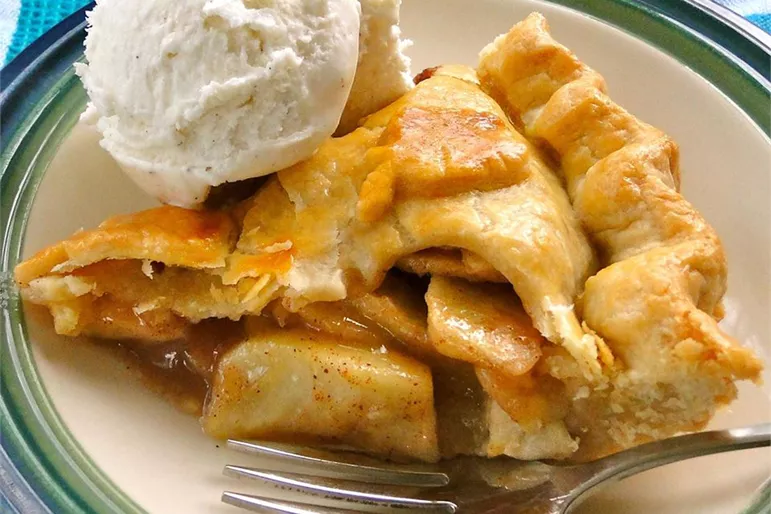

Apple Pie

How to Make Apple Pie
You'll find a detailed ingredient list and step-by-step instructions in the recipe below, but let's go over the basics:
Apple Pie Ingredients
These are the simple ingredients to make this top-rated apple pie recipe:
- Apples: This recipe calls for eight small Granny Smith apples.
- Butter and flour: The filling starts with butter and all-purpose flour cooked into a paste.
- Sugars: A blend of white and brown sugar creates the perfect sweet flavor with a hint of warmth.
- Pie crust: Use a store-bought double crust pie pastry or make your own at home.
How to Make an Apple Pie
Here's a very brief overview of what you can expect when you make this old-fashioned apple pie recipe at home:
- Make the filling: On the stove, make a paste with flour and butter. Add the sugar and water and bring to a boil. Simmer, then remove from heat.
- Assemble the pie: Press one crust into a pie plate. Place the sliced apples on the bottom crust. Use the top crust to make a lattice crust according to the recipe below. Pour the butter-sugar mixture over the lattice crust.
- Bake the pie: Bake the pie in a preheated oven until the apples are soft and the crust is golden brown.
Go Homepage